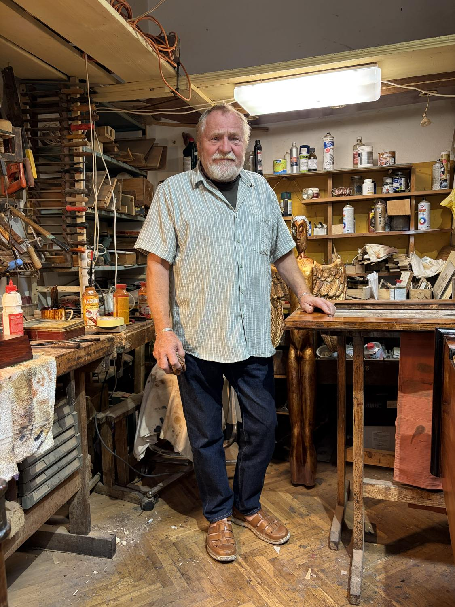
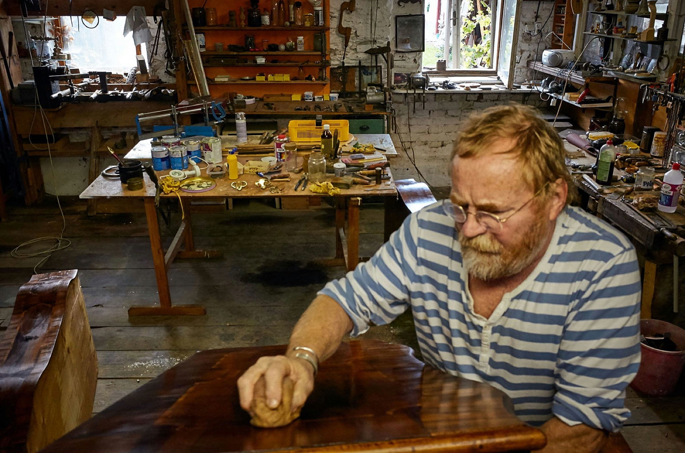

Renovace
Ruční repase uměleckořemeslného nábytku. Výhradně přírodní materiály, minimum elektrických spotřebičů — postup nehlučný, nezapáchající, neškodlivý životnímu prostředí.
Praha 1 · ve vlastní dílně od roku 1988
Ruční repase uměleckořemeslného nábytku — výhradně z přírodních materiálů, při minimálním použití elektrických nástrojů.

Národní muzeum Velvyslanectví SRN Rudolfinum Židovské muzeum

Restaurování není výroba. Je to rozhodování o tom, co smí zůstat.
Pracuji ručně, s přírodními materiály — klihem, šelakem, včelím voskem, benzínem a dřevem shodným s originálem. Elektrické nástroje používám na minimum: postup je nehlučný, nezapáchající a neškodlivý životnímu prostředí. Předmět se tím vrací do stavu, ve kterém byl zamýšlen, aniž by přišel o svou historii.
Od roku 1988 vedu vlastní restaurátorskou živnost v Praze. Za tu dobu prošly dílnou oltáře, zárubně Národního muzea, mobiliáře velvyslanectví i stovky kusů ze soukromých sbírek. Ke každému objektu vzniká restaurátorská zpráva a průběžná fotodokumentace.
02 — Služby
Šest okruhů práce. Rozsah i postup se u každé zakázky určuje po prohlídce objektu.
Ruční repase uměleckořemeslného nábytku. Výhradně přírodní materiály, minimum elektrických spotřebičů — postup nehlučný, nezapáchající, neškodlivý životnímu prostředí.
Stoly, židle, skříně, komody, sakrální interiéry i externí vchody do domu — dveře a vrata.
Doplnění a scelení dýhovaných a vykládaných ploch identickým materiálem, včetně barevného sjednocení.
Restaurování a výroba replik dle vlastních návrhů — od jednotlivého kusu po celý interiér.
Výroba nábytku podle vlastního návrhu i podle zadání — solitéry, vestavby, interiérové celky.
Renovace a obnova povrchových úprav, především šelakových povrchů leštěných do sametového lesku.
03 — Dílo
Archiv prací od roku 1988. Kliknutím se otevře fotodokumentace zakázky.
Restaurování mobiliáře klášterního interiéru.
Restaurování dřevěného mobiliáře a vybavení palácové kaple.
Repase historických vrat.
04 — Případová studie
Galerie hlavního města Prahy
Restaurování dřevěného reliéfu — masivní blok olšového dřeva 138 × 108 × 10 cm, sklížený do spárovky a osazený smrkovým rámem.
Jedná se o masivní blok z olšového dřeva o rozměrech 138 × 108 × 10 cm, sklížený do spárovky a osazený na zadní straně smrkovým rámem, jenž je připevněn vruty do masivu plastiky. Z přední strany je vyřezán reliéf skupiny postav. V horní polovině masivu je znatelná prasklina cca 4 mm, která se táhne do hloubky celého reliéfu. Po okrajích praskliny jsou patrné zbytky neidentifikovatelného lepidla. Celkový povrch reliéfu je mírně omšelý a zaprášený. Stav bez známky dřevokazného hmyzu.
Reliéf je nutno převézt do ateliéru. Po důkladné prohlídce a fotodokumentaci následuje demontáž odnímatelného smrkového rámu, připevněného zezadu železnými vruty. Po proklížení spáry je nutno celý reliéf stáhnout do ztužidel, čímž by se spára měla zcela uzavřít. Po sklížení a zaschnutí lepidla se opět osadí smrkový rám. Pokud nedojde ke kompletnímu zatažení spáry, bude nutno přistoupit k vysazení identickým materiálem (přešpánování) a částečně dotmelit nedovřené části spáry. Po přečištění spáry a barevném sjednocení dojde k přečištění celého povrchu suchým procesem a k napuštění přípravkem proti dřevokaznému hmyzu a plísním. Následuje nanesení voskové emulze (včelí vosk rozpuštěný v benzínu). Poté se celý povrch finálně přeleští hadrem a kartáčem do sametového lesku.
Dílna
Ruční nástroje, klih, šelak a včelí vosk. Postup je nehlučný a bez zápachu — práce na jednom kusu tu trvá tak dlouho, jak potřebuje.
Dílnu vedu na Spálené od roku 1988. Kus si sem můžete přinést na prohlídku — rozsah práce i cenu určuji až podle toho, co dřevo unese.
06 — Reference
Výběr z veřejných, památkových a soukromých zakázek.
07 — Kontakt
Rozsah práce i cenu určuji až po prohlídce objektu. Ozvěte se telefonicky nebo e-mailem — domluvíme termín v dílně.